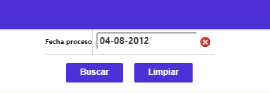
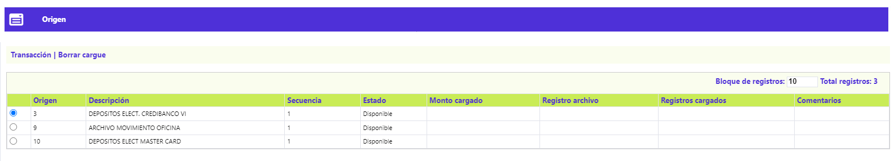
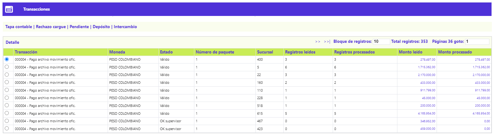
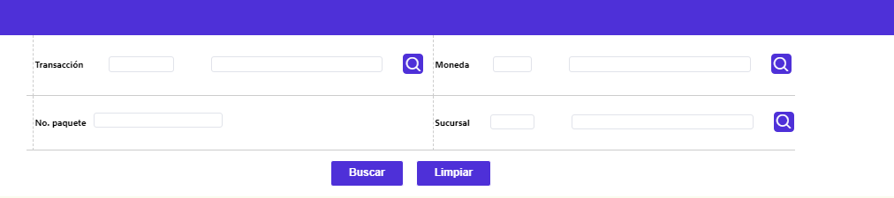
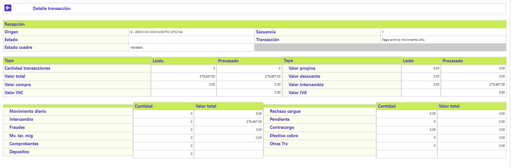

Consulta global de intercambio débito
Mediante esta opción es posible conocer a manera de síntesis y para cada fecha de proceso, el estado del movimiento por origen del mismo.
Filtro: El formulario cuenta con un filtro inicial de búsqueda, necesario para la consulta de la información:

Fecha proceso |
Despliega la fecha del sistema en que fue procesado el movimiento. Si se requiere consultar movimiento de fecha anterior basta con utilizar el filtro e ingresar la fecha deseada. |
Al cargar la información a través del botón Buscar, se muestra el siguinte formulario que contiene la opción Transacciones.

Transacciones: A través de este botón el sistema muestra un nuevo formulario con las siguientes opciones en la parte superior: Tapa contable, Movimiento diario,Pendientes.
A través de estas opciones se presenta de manera detallada la desagregación del conjunto de transacciones, las que por efecto de las validaciones toman diferente fin; Exceptuando la Tapa contable y el Movimiento diario, estas opciones sólo se muestran cuando existen transacciones dentro del movimiento, y permiten desplegar formularios adicionales que contienen información detallada de cada una de ellas.

Filtro: El formulario cuenta con un filtro inicial de búsqueda, necesario para la consulta de la información:

Transacción |
Campo en el cual se ingresa el nombre asociado a cada tipo o clase de transacción contenida dentro del archivo del movimiento. El formulario despliega la misma clase de transacción por cuantos paquetes la contengan en una misma fecha de proceso y origen de transacciones. |
Moneda |
Contiene el nombre de la moneda en que se denomina el movimiento consultado. |
Número paquete |
Se ingresa el número del paquete que identifica el movimiento por clase o tipo de transacción, lo que facilita su ubicación en caso de ser necesario. |
Sucursal |
Se ingresa el código que identifica la oficina por medio de la que ingresó el movimiento. |
Detalle: Si el usuario invoca la opción Detalle se despliega el siguiente formulario:

.